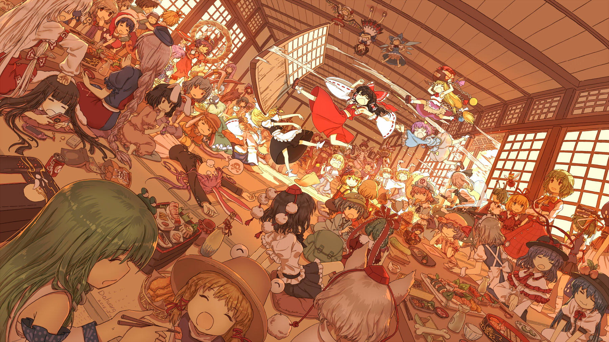
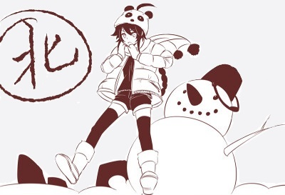

2011年，雅音宫羽入围VOCALOID CHINA PROJECT中文形象，后经画师ideolo再创作于2012年3月公布洛天依的形象设计；2012年7月，在第八届中国国际动漫游戏博览会正式推出声库。 早期主要活跃在动漫“二次元”圈层；2016年起逐渐进入大众视野；与杨钰莹带来《花儿纳吉》，翻唱《忍者神龟2：破影而出》主题曲。2017年与许嵩演唱歌曲《深夜书店》； 同年，洛天依等在上海举行万人演唱会。2018年，与京剧演员王佩瑜合唱歌曲《但愿人长久》。2019年，成为首位在日本演出的中国虚拟歌手。2021年与俄罗斯虚拟歌手娜娜共同发布单曲《出发向未来》 [5]。2022年，洛天依ACE1.0在ACE虚拟歌姬开启公测；获“最受欢迎虚拟代言人” [163]。2023年，加入索尼音乐。2024年入选“2023年度十大虚拟数字人”。2025年9月举行2025洛天依 “无限共鸣・流光协奏”全息巡回演唱会。10月担任国家宝藏推荐官。2026年2月参加《“活力视听 万象同屏”2026中国网络视听盛典》。

2011年，雅音宫羽入围VOCALOID CHINA PROJECT中文形象，后经画师ideolo再创作于2012年3月公布洛天依的形象设计；2012年7月，在第八届中国国际动漫游戏博览会正式推出声库。 早期主要活跃在动漫“二次元”圈层；2016年起逐渐进入大众视野；与杨钰莹带来《花儿纳吉》，翻唱《忍者神龟2：破影而出》主题曲。2017年与许嵩演唱歌曲《深夜书店》； 同年，洛天依等在上海举行万人演唱会。2018年，与京剧演员王佩瑜合唱歌曲《但愿人长久》。2019年，成为首位在日本演出的中国虚拟歌手。2021年与俄罗斯虚拟歌手娜娜共同发布单曲《出发向未来》 [5]。2022年，洛天依ACE1.0在ACE虚拟歌姬开启公测；获“最受欢迎虚拟代言人” [163]。2023年，加入索尼音乐。2024年入选“2023年度十大虚拟数字人”。2025年9月举行2025洛天依 “无限共鸣・流光协奏”全息巡回演唱会。10月担任国家宝藏推荐官。2026年2月参加《“活力视听 万象同屏”2026中国网络视听盛典》。

南北组